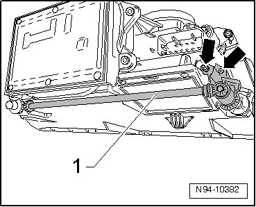
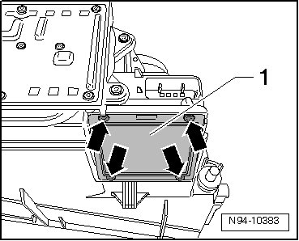
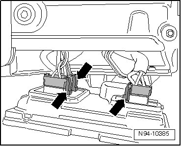

Headlamp Power Output Stages
HID Headlamps with Cornering Lamp, through 11.06
Headlamp Power Output Stages
• Illustrations depict replacement of headlamp power output stage at left headlamp.
• Replacement of Left Headlamp Power Output Stage (J667) and of Right Headlamp Power Output Stage (J668) is performed analogously.
Removing
- Switch off ignition, switch off all electrical consumers and remove ignition key.
- Remove headlamp --> [ Headlamps, through 11.06 ] Headlamps, through 11.06.
- Remove mounting bolts - arrows - and remove adjusting shaft - 1 - for low beam and high beam height adjustment from headlamp.

- Remove mounting bolts - arrows - and pull headlamp power output stage - 1 - as far from headlamp as wire lengths allow.

- Disengage harness connectors - arrows - and disconnect them.

- Detach headlamp power output stage from headlamp.
Installing
Install in reverse order of removal, noting the following:
• When installing covers and headlamp power output stage, ensure seals are seated correctly. It is destroyed by ingress of water into headlamp.
• After installing a new headlamp power output stage, Headlamp Range/Cornering Lamp Control Module (J745) must be coded --> [ Headlamp Range/Cornering Lamp Control Module, Coding ] HID Headlamps with Cornering Lamp, through 11.06 and then basic setting of headlamps must be performed.
- Check headlamp for function.
- Check and adjust headlamp aim if necessary.